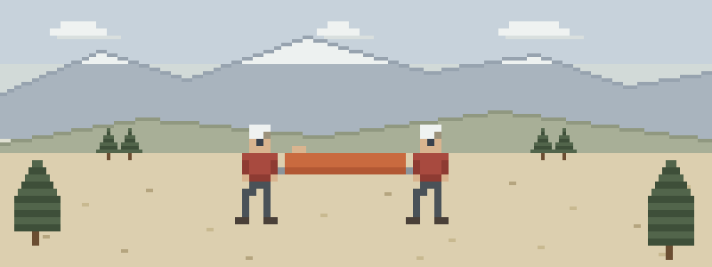

Missions are made of these
- The subject spent the night out. Found at dawn behind a log, cold and quiet. The hypothermia wrap and gentle handling — insulation under, head covered, no rough movement — are most of the mission.
- The carry-out. A splinted lower leg, six miles of trail, litter teams rotating. The medicine that matters happened in the first twenty minutes, before the wheels.
- The scene that bites back. Loose rock above the subject, a bystander in the fall line. The difference between a rescuer and a second patient is thirty seconds of reading the slope.
Before the interview, read these
Teams run on a shared assessment language. This order gets you conversational fastest:
- Patient Assessment — the system everything else hangs on — scene, XABCDE, SAMPLE, serial vitals
- Spine Injuries — motion restriction is half of packaging
- Cold Injuries — most found subjects are cold subjects
- Shock — the trend that decides evacuation urgency
- Evacuation — size-up, resources, messengers, and the call
Then pressure-test it
Interactive scenarios — one decision at a time, tempting mistakes included, debrief at the end:
- Hero Complex — scene safety when someone is screaming your name
- The Burrito — the hypothermia wrap, done in order
- Two Go, One Stays — messengers, notes, and staying power
The certification question, honestly. “Wilderness First Aid” isn’t a regulated credential. No government body defines what a WFA card means — it means whatever the company that printed it says it means. What counts in front of a patient is whether you can do the work. This course teaches the work, free, and issues a record of completion — not a certificate, and we won’t pretend otherwise. Most teams require a WFR or EMT card from a recognized provider before you’re mission-qualified — this course doesn’t check that box, and isn’t trying to. It gets you fluent before the paid course, and keeps you sharp between recerts. If nobody requires you to hold a card, what you need are the skills, not the laminate.
Asked at every tryout
Do I need a WFR before I can join a SAR team?
Usually not to apply — most teams take promising candidates and train them up, though mission-qualified status typically requires a WFR or EMT card from a recognized provider. Every team writes its own rules, so ask yours. What you can do before the interview is show up already fluent in assessment — that part costs nothing but evenings.
What medical skills do SAR volunteers actually use?
Less drama than you’d guess. Most subjects are found cold, dehydrated, and scared rather than broken — so the workhorse skills are the hypothermia wrap, gentle packaging, serial vitals, and the long, boring carry-out.
How should I prepare for SAR tryouts?
Fitness and land navigation are on you. For the medical station, drill the assessment order until it survives adrenaline — the practice scenarios here exist for exactly that. Teams notice the candidate who checks the scene before the subject.
What this is
Fifteen lessons, a 40-question knowledge check, sixteen practice scenarios, a printable field reference card, and a kit checklist. Free, no account, nothing recorded about you, source on GitHub. It teaches decision-making, not hands-on skill — practice the hands-on parts on a real, padded, complaining friend.
Others who answer the call: volunteer firefighters in rural & wildland-urban interface districts · park rangers, game wardens & conservation officers · ski patrol volunteers & resort safety staff